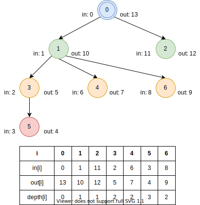

3.3.1. オイラーツアー¶
Code: euler_tour.py
Test: test_euler_tour.py
オイラーツアーとは¶
根付き木の表現方法の1つ、およびその作成手法。
二分探索やSegment Treeと組み合わせることにより、「n世代目の子孫の取得」や「2つのノードの最小共通祖先の取得」など、複雑なクエリを高速に処理できる。
オイラーツアーでは根付き木を深さ優先探索で走査し、訪問順を一列に並べて記録する。
訪問順の記録には、頂点または辺に対する入時刻・出時刻を用いる。
包含関係による階層表現¶
包含関係を用いて、ノードの子孫に関する情報を抽出できる。
包含関係に置き換えるにはまず、ノード \(i\) 、入時刻 \(in_i\) 、出時刻 \(out_i\)、深さの情報を訪れた順に記録する。
入時刻・出時刻を数直線上に並べ、\([in_i, out_i]\) の区間を描く。
区間は集合の1つなので、区間はすべて集合に置き換えることができ、区間の重なりは包含関係とみなすことができる。
なお、関係データベースの分野にも同等の表現があり、こちらは Nested set model と呼ばれる。
子孫の数¶
ノード \(i\) の子孫要素 \(j\) すべてに対して \(in_i < in_j < out_i\) が成り立つので、この式を用いて評価すればよい。
このとき、予め \(in_j\) をソートしておくことで、二分探索を用いて \(\mathcal{O}(\log(n))\) でクエリを処理できる。
子の数¶
包含関係に加え、深さの情報を組み合わせる。
\(depth_i + 1 = depth_j\) かつ \(in_i < in_j < out_i\) が成り立つノードを抽出すればよい。
頂点の訪問順による表現¶
包含関係を用いた表現では「訪問途中に通過した親」の情報が欠落している。
時刻 \(t\) における訪問中のノードを \(path[t]\) とすれば、経路上の親の情報がオイラーツアー表現に追加され、祖先に関するクエリを扱うことができるようになる。
ノードから時刻を求めるときは上の表を、時刻からノードを求めるときは下の表を用いる。
最小共通祖先¶
ノード \(u, v\) の最小共通祖先 (Lowest Common Ancestor, LCA) とは、共通の祖先のうち最も深さが大きいノードを指す。
オイラーツアーにおけるノード \(u\) から \(v\) への経路で通過したノードのうち、最も深さが大きいものを選択すればよい。
「区間 \(u, v\) における深さ最大のノード」は、 \(depth[t]\) をSegment Treeで管理することで \(\mathcal{O}(\log(n))\) で処理できる。
コード¶
[1]:
from __future__ import annotations
def euler_tour(n: int, g: list[list[int]]) -> tuple[list[int], list[int], list[int]]:
t_in = [0] * n
t_out = [0] * n
depth = [-1] * n
def dfs(u, t=0):
t_in[u] = t
t += 1
for v in g[u]:
if depth[v] == -1:
depth[v] = depth[u] + 1
t = dfs(v, t)
t_out[u] = t
t += 1
return t
depth[0] = 0
dfs(0)
return t_in, t_out, depth
[2]:
N = 7
G = [[1, 2], [3, 4, 6], [], [5,], [], [], []]
t_in, t_out, depth = euler_tour(N, G)
print(f"t_in:\t{t_in}")
print(f"t_out:\t{t_out}")
print(f"depth:\t{depth}")
t_in: [0, 1, 11, 2, 6, 3, 8]
t_out: [13, 10, 12, 5, 7, 4, 9]
depth: [0, 1, 1, 2, 2, 3, 2]